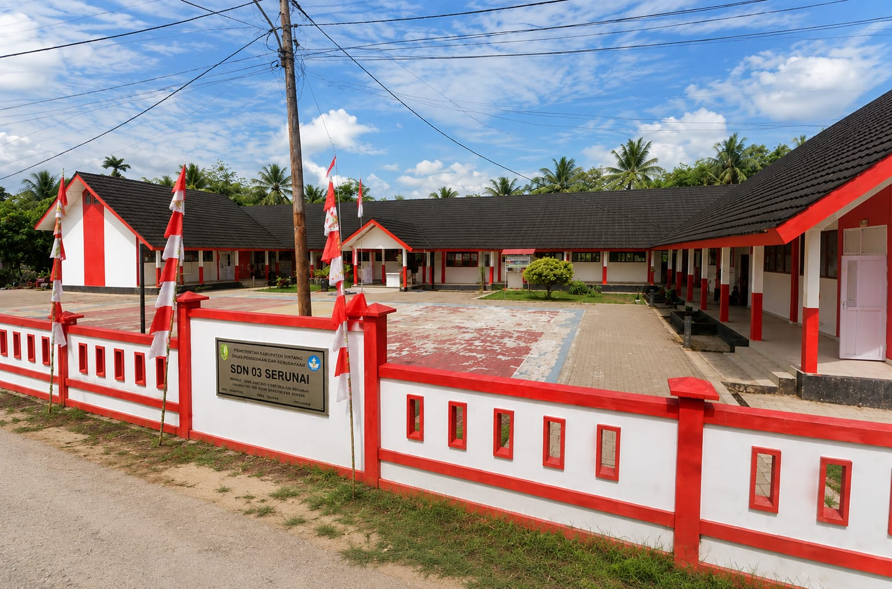
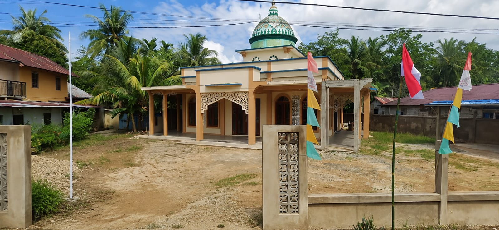
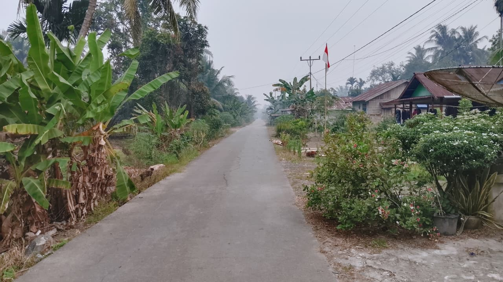
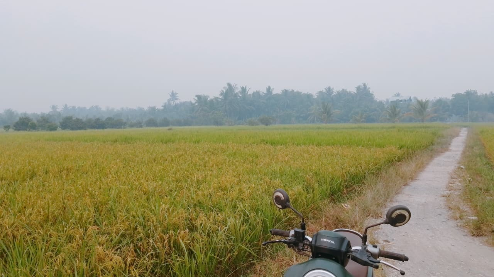
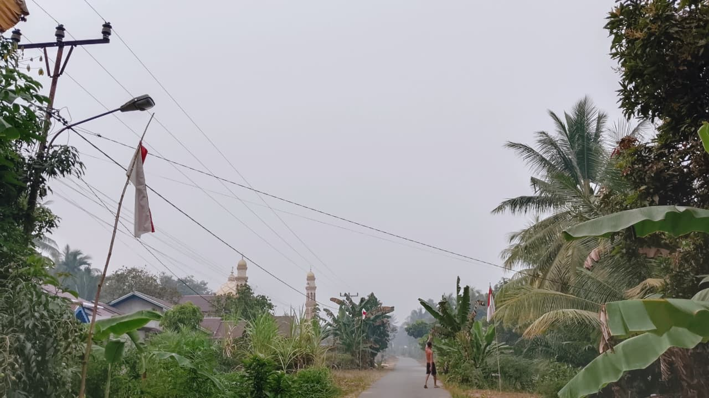

SELAMAT DATANG DI
Desa yang nyaman dengan lingkungan yang asri serta kehidupan masyarakat yang sederhana dan harmonis.
Kenali Desa →LOKASI DESA
Jl. Serunai, Dusun Cempaka
Kecamatan Salatiga
Kabupaten Sambas
Kalimantan Barat
TENTANG DESA
Desa Serunai merupakan desa yang memiliki lingkungan nyaman dan masyarakat yang hidup berdampingan.
Kehidupan masyarakat Desa Serunai masih terasa sederhana, dengan lingkungan yang asri dan suasana desa yang tenang.
Suasana desa yang nyaman, bersih dan menyenangkan.
FASILITAS DESA
Beberapa fasilitas yang dapat ditemukan di lingkungan Desa Serunai.
Sarana pendidikan bagi masyarakat Desa Serunai.
Tempat ibadah dan kegiatan keagamaan masyarakat.
Jalan yang digunakan untuk aktivitas masyarakat sehari-hari.
Gambaran sederhana mengenai suasana dan lingkungan Desa Serunai.





Mengenal desa lebih dekat melalui informasi dan suasana Desa Serunai.
Lihat Profil Desa →